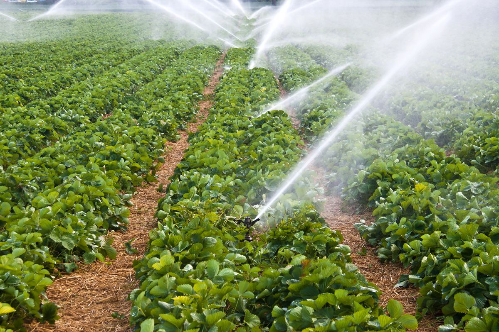
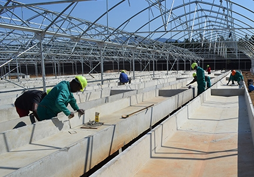
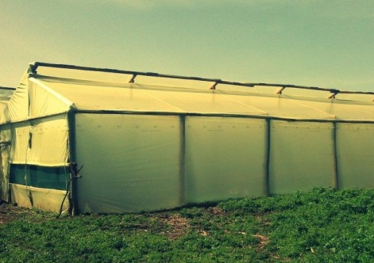
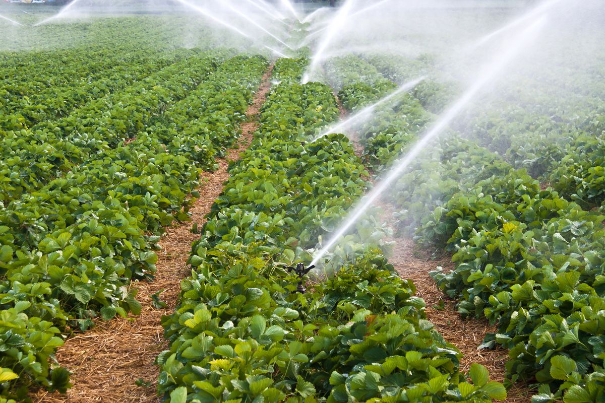
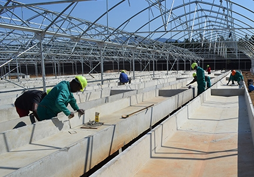
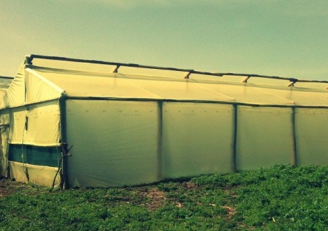

Agro Consultancy Services
 





When looking to get into farming especially commercially, you often find yourself overwhelmed with the options and it can sometimes be a daunting prospect looking at diffent crops or livestock animals and not knowing what exactly to venture into.
We've put together a list of the some of the issues that might prove to be a stumbling block, so when you decide to dip your feet in the water, you know where to start, and of course we've put our contacts on the about page to get intouch with us instead getting overwhelmed with all the information outh there on the internet.
There are a million thing that you can get into specifically farming-wise but instead of getting into another "quail farming bubble" chart your own course and get advice on the way there, we'll offer the information you need and if need be site visitation in order to ensure your venture is successful.